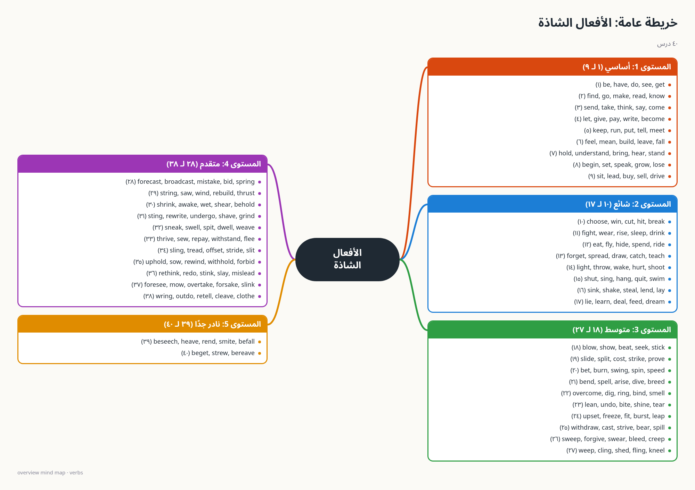

🔤
الأفعال الشاذة (Irregular Verbs)
5 أفعال في كل درس، من الأسهل للأندر. كل فعل بكارت وتصريفاته ونطقه UK وUS ومعناه وأمثلة وأسئلة. كل الدروس مفتوحة، ابدأ من أي درس.
🧠 شوف الخريطة الذهنية الشاملة للكورس

تقدمك ·
المستوى الأول: الأفعال الشاذة (الدروس 1 إلى 40)
المستوى 1 من 5: أساسي
🔤
الدرس 1: be، have، do، see، get5 أفعال · المستوى 1
🔤
الدرس 2: find، go، make، read، know5 أفعال · المستوى 1
🔤
الدرس 3: send، take، think، say، come5 أفعال · المستوى 1
🔤
الدرس 4: let، give، pay، write، become5 أفعال · المستوى 1
🔤
الدرس 5: keep، run، put، tell، meet5 أفعال · المستوى 1
🔤
الدرس 6: feel، mean، build، leave، fall5 أفعال · المستوى 1
🔤
الدرس 7: hold، understand، bring، hear، stand5 أفعال · المستوى 1
🔤
الدرس 8: begin، set، speak، grow، lose5 أفعال · المستوى 1
🔤
الدرس 9: sit، lead، buy، sell، drive5 أفعال · المستوى 1-2
المستوى 2 من 5: شائع
🔤
الدرس 10: choose، win، cut، hit، break5 أفعال · المستوى 2
🔤
الدرس 11: fight، wear، rise، sleep، drink5 أفعال · المستوى 2
🔤
الدرس 12: eat، fly، hide، spend، ride5 أفعال · المستوى 2
🔤
الدرس 13: forget، spread، draw، catch، teach5 أفعال · المستوى 2
🔤
الدرس 14: light، throw، wake، hurt، shoot5 أفعال · المستوى 2
🔤
الدرس 15: shut، sing، hang، quit، swim5 أفعال · المستوى 2
🔤
الدرس 16: sink، shake، steal، lend، lay5 أفعال · المستوى 2
🔤
الدرس 17: lie، learn، deal، feed، dream5 أفعال · المستوى 2-3
المستوى 3 من 5: متوسط
🔤
الدرس 18: blow، show، beat، seek، stick5 أفعال · المستوى 3
🔤
الدرس 19: slide، split، cost، strike، prove5 أفعال · المستوى 3
🔤
الدرس 20: bet، burn، swing، spin، speed5 أفعال · المستوى 3
🔤
الدرس 21: bend، spell، arise، dive، breed5 أفعال · المستوى 3
🔤
الدرس 22: overcome، dig، ring، bind، smell5 أفعال · المستوى 3
🔤
الدرس 23: lean، undo، bite، shine، tear5 أفعال · المستوى 3
🔤
الدرس 24: upset، freeze، fit، burst، leap5 أفعال · المستوى 3
🔤
الدرس 25: withdraw، cast، strive، bear، spill5 أفعال · المستوى 3
🔤
الدرس 26: sweep، forgive، swear، bleed، creep5 أفعال · المستوى 3
🔤
الدرس 27: weep، cling، shed، fling، kneel5 أفعال · المستوى 3
المستوى 4 من 5: متقدم
🔤
الدرس 28: forecast، broadcast، mistake، bid، spring5 أفعال · المستوى 4
🔤
الدرس 29: string، saw، wind، rebuild، thrust5 أفعال · المستوى 4
🔤
الدرس 30: shrink، awake، wet، shear، behold5 أفعال · المستوى 4
🔤
الدرس 31: sting، rewrite، undergo، shave، grind5 أفعال · المستوى 4
🔤
الدرس 32: sneak، swell، spit، dwell، weave5 أفعال · المستوى 4
🔤
الدرس 33: thrive، sew، repay، withstand، flee5 أفعال · المستوى 4
🔤
الدرس 34: sling، tread، offset، stride، slit5 أفعال · المستوى 4
🔤
الدرس 35: uphold، sow، rewind، withhold، forbid5 أفعال · المستوى 4
🔤
الدرس 36: rethink، redo، stink، slay، mislead5 أفعال · المستوى 4
🔤
الدرس 37: foresee، mow، overtake، forsake، slink5 أفعال · المستوى 4
🔤
الدرس 38: wring، outdo، retell، cleave، clothe5 أفعال · المستوى 4-5
المستوى 5 من 5: نادر جدًا
🔤
الدرس 39: beseech، heave، rend، smite، befall5 أفعال · المستوى 5
🔤
الدرس 40: beget، strew، bereave3 أفعال · المستوى 5
المستوى الثاني: الأفعال الأغرب (الدروس 41 إلى 60)
🔤
الدرس 41: shoe، reset، rid، dare، undertake5 أفعال · المستوى 3-4-5
🔤
الدرس 42: bless، knit، crow، abide، override5 أفعال · المستوى 3-4
🔤
الدرس 43: overlay، oversee، overcast، remake، preset5 أفعال · المستوى 3
🔤
الدرس 44: spoil، resell، overwrite، unwind، inlay5 أفعال · المستوى 3-4-5
🔤
الدرس 45: outlay، overthrow، prepay، overrun، rerun5 أفعال · المستوى 3
🔤
الدرس 46: partake، underlie، reread، sublet، undercut5 أفعال · المستوى 3-4
🔤
الدرس 47: proofread، stave، redraw، retake، hew5 أفعال · المستوى 3-5
🔤
الدرس 48: overhang، telecast، recast، typeset، outrun5 أفعال · المستوى 3
🔤
الدرس 49: alight، rebroadcast، underwrite، breastfeed، outsell5 أفعال · المستوى 4-5
🔤
الدرس 50: overshoot، outgrow، overdo، outbid، lade5 أفعال · المستوى 4-5
🔤
الدرس 51: gild، overhear، overpay، gird، unbind5 أفعال · المستوى 4-5
🔤
الدرس 52: resit، typecast، overspend، relearn، outshine5 أفعال · المستوى 4
🔤
الدرس 53: unlearn، chide، overeat، crossbreed، rebind5 أفعال · المستوى 4-5
🔤
الدرس 54: seethe، unfreeze، underspend، relight، overspread5 أفعال · المستوى 4-5
🔤
الدرس 55: bespeak، overbid، browbeat، undergird، backslide5 أفعال · المستوى 4-5
🔤
الدرس 56: overdraw، bethink، outspend، overfeed، underpay5 أفعال · المستوى 4-5
🔤
الدرس 57: overfly، undersell، oversleep، bestride، outfight5 أفعال · المستوى 5
🔤
الدرس 58: outthink، overbuild، overdrink، presell4 أفعال · المستوى 5
🔤
الدرس 59: rehang، rewin، shrive، underbid4 أفعال · المستوى 5
🔤
الدرس 60: underfeed، unsay، unsling، wed4 أفعال · المستوى 4-5
📎 ملحقات: أفعال شاذة، مستوى A2
🔗 How do you form the present tense and past tense of irregular verbs in English? | Learning English Grammar | Collins Education [A2]🔗 Irregular verbs | LearnEnglish [A2]▶️ 101 Irregular Verbs - Past Tense in English [A2]▶️ Common irregular verbs v1 v2 v3 | irregular verbs in English | irregular verbs list [A2]📎 ملحقات: أفعال شاذة، مستوى B1
▶️ 100 Irregular Verbs past tense - Irregular verbs list in English examples with pictures [B1]▶️ How to Pronounce the Most Common Irregular Verbs in English [B1]📎 ملحقات: أفعال شاذة، مستوى B2
▶️ Learn 208 irregular verbs - 5 forms - American English #IrregularVerbs #LearnEnglish #AmericanAccent [B2]▶️ Learn 208 irregular verbs - 5 forms - British English #IrregularVerbs #LearnEnglish #BritishAccent [B2]شرح عربي إضافي (خارجي)
لينكات برّه الموقع بتفتح في صفحة جديدة، بشرح بالعربي. مش جزء من الكورس.
🔗 فيديو: الأفعال الشاذة بالعربي (eddirasa)